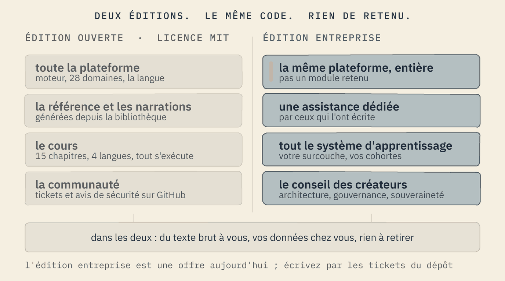

L'offre
Softanza raconte une seule histoire à six sortes de makers. Elle vient en deux éditions qui contiennent le même code : une édition ouverte sous licence MIT, et une édition entreprise qui y ajoute les personnes qui l'ont écrite. Cette page dit à qui chaque porte s'adresse, ce que chaque édition contient, et quelles sont les références.
Qu'est-ce qu'un maker ?
Un maker transforme ce qu'il sait d'un monde en quelque chose qui tourne, sans attendre l'industrie du logiciel. Il n'est pas défini par sa maîtrise de la programmation mais par la propriété : l'artefact est à lui, en texte brut, et il n'expire pas. Une enseignante, un analyste, un commerçant, un élève, un fonctionnaire, et un agent qui propose sous tous ces mondes. Softanza raconte une seule histoire ; chaque porte ci-dessous l'ouvre à l'endroit qui vous concerne.
Six portes
Programmeur ou programmeuse, seul·e ou en petite équipe
Ce que vous déclarez : votre intention, dans une bibliothèque qui se lit comme une phrase : on trouve d'abord, on agit ensuite. Ce que vous obtenez : un moteur Zig sous chaque appel, correct en Unicode, et une narration qui s'exécute pour chaque idée. Où commencer : la page Démarrer, puis le chapitre 1 du cours.
o1 = new stzList([ "tea", "rice", "tea", "fish", "rice", "tea" ])
? o1.ContainsDuplicates()
? o1.NumberOfOccurrence("tea")
? @@( o1.FindAll("tea") )
? @@( o1.DuplicatesRemoved() )
1 3 [ 1, 3, 6 ] [ "tea", "rice", "fish" ]
exécuté le 2026-09-30 à 23:11, Softanza au commit 0e72e2e2c
Analyste fonctionnel ou data
Ce que vous déclarez : les entités, les règles et les flux de votre organisation, dans un fichier de connaissance en texte brut. Ce que vous obtenez : un monde interrogeable, où le graphe des dépendances et la table des symboles sont le même graphe, plus des tables et des statistiques calculées par le moteur. Où commencer : le chapitre 12 du cours, « Enseigner un monde », dans le lecteur.
o = new stzTable([ [ :region, :population ],
[ "Agadez", 487620 ], [ "Maradi", 3402094 ], [ "Zinder", 3539764 ] ])
o.Show()
╭────────┬────────────╮ │ Region │ Population │ ├────────┼────────────┤ │ Agadez │ 487620 │ │ Maradi │ 3402094 │ │ Zinder │ 3539764 │ ╰────────┴────────────╯
exécuté le 2026-10-01 à 09:26 ; les chiffres sont ceux du recensement RGPH 2012 de l'Institut national de la statistique du Niger, tels que lus par le garde de la carte
Designer UI, UX, CX
Ce que vous déclarez : une image, une carte, un écran, comme un programme. Ce que vous obtenez : un rendu produit par le moteur, reproductible à l'octet, et une constitution des interfaces de 122 règles et 22 verbes qu'une machine peut vérifier. Où commencer : le chapitre 11 du cours, « Dessiner la réponse », et la constitution Zui.

CTO, gouvernement, startup, entreprise
Ce que vous déclarez : votre monde, votre gouvernance, et ce que chaque acteur, humain ou agent, peut commettre. Ce que vous obtenez : des agents qui ne peuvent pas vous nuire, un modèle de menace de trente-huit garanties avec leurs gardes, un confinement mesuré, et la propriété de tout : code, configuration, données, en texte brut. Où commencer : le paradigme agentique, puis les éditions ci-dessous.
A bank analyst declares a stock-watcher agent, first without saying what it covers: -> refused / [pia-coverage @ coverage] an agent must say WHAT IT COVERS. ...then with its coverage stated: -> The court judged your declaration, and every promise of the exercise was kept.
>> TIME TO DETECT : 395 ms >> TIME TO CONTAIN: 50 ms TOTAL: 27 assertions, 27 pass, 0 fail
exécuté le 2026-09-30 à 23:10 (démonstration, scène 7) et le 2026-10-01 à 00:41 (exercice de confinement)
Éducateur, linguiste, auteur, architecte de connaissance
Ce que vous déclarez : un cours, une surcouche pour votre institution, une édition dans votre langue, un monde de connaissance. Ce que vous obtenez : un programme en texte brut où chaque cellule s'exécute et où chaque exercice est vérifié en s'exécutant, un tuteur qui demande, des cohortes dont le rapport est une narration. Où commencer : Apprendre, et le guide de la surcouche.
? len( NaturallyIn("ha",
'Yi jeri dauke [ "Ibrahim", "Fatima", "Ibrahim",
"Moussa", "Fatima" ] cire maimaitattu').Result() )
-> Every promise of the exercise was kept when your program ran.
PROVED the child's Hausa program passed, checked by running it
? Q("سلام").NumberOfChars() --> 4
? Q("مرحبا بالعالم").Script() --> arabic
exécuté le 2026-09-30 à 23:10 et le 2026-10-01 à 09:26
Un agent
Ce que vous déclarez : vous-même, dans un fichier d'agent : ce que vous couvrez, la réversibilité de vos actes, la posture de chaque fonction que vous appelez. Ce que vous obtenez : un atelier où tout ce que vous faites est répété sans toucher le réel, une grammaire contrainte qui vous empêche d'émettre une phrase malformée, et un tribunal qui juge votre plan. Ce que vous n'obtenez pas : la capacité de commettre. Où commencer : le paradigme agentique, et le chapitre 14 du cours, « Un agent qui ne peut pas nuire ».
Update plan (610 of 610 operations to commit): * 1. delete file '…/course.zknw' * 2. delete file '…/curriculum.zknw' ...
actor 'amina-helper-llm' cannot commit -- it lacks the 'effectful' capability (required by operation 1) PROVED the course folder still holds all 610 files
exécuté le 2026-09-30 à 23:10 par demo, scène 6
Deux éditions, le même code

L'édition ouverte
Tout ce qui est sur ce site, sous licence MIT : le moteur, les vingt-huit domaines, la langue telle qu'elle tourne aujourd'hui, la référence, les 134 narrations, le cours en quatre langues, les gardes. Tickets et avis de sécurité sur GitHub. Pas de compte, pas de licence par poste, pas de télémétrie : un dossier, copié.
L'édition entreprise
La même plateforme, entière : pas un module n'est retenu pour les clients payants. S'y ajoutent : une assistance dédiée par les personnes qui ont écrit la plateforme ; le système d'apprentissage complet déployé pour votre institution, avec votre surcouche, vos cohortes et votre langue ; et le conseil des créateurs de la plateforme sur l'architecture, la gouvernance et la souveraineté, y compris un verdict de souveraineté pour chaque dépendance de votre système.
Une offre aujourd'hui, pas une page produit avec un prix : écrivez par les tickets du dépôt.
La manière Softanza La plateforme est gratuite et entière pour tout le monde. Ce qu'une entreprise achète, c'est du temps avec les personnes qui l'ont construite, et la garantie que ce qu'elle construit reste à elle.
Ce que vous possédez, dans les deux éditions
Vos mondes, règles, cours et agents sont des fichiers texte dans des dossiers que vous gardez. La source du moteur est dans le dépôt et se construit pour Windows, Linux et macOS. Le cours est du texte brut, adapté par surcouche et jamais par copie, et la progression d'un apprenant est un fichier texte que vous pouvez lire pour toujours. Rien que quiconque puisse retirer ; la page Vision dit ce que cette phrase veut dire et ce qu'elle ne veut pas dire.
Les références
Sonibank, Niamey
Organizium Standard Edition, sous licence, installé sur le réseau interne de la banque. Le guide d'installation livré à la banque atteste la référence.
L'École nationale des douanes, Tunisie
Quatre exigences, documentées une à une, ont transformé un outil d'évaluation en plateforme organisationnelle.
RestoLean, Lyon
Une plateforme pour le commerce de quartier, portée par le propriétaire d'un restaurant de couscous. L'avenant n° 1 a été clos le 4 août 2026 ; sa règle ergonomique est « au plus deux gestes par action ».
Rien d'autre n'est une référence tant qu'un document ne le prouve pas. Ce site ne cite aucun nombre de pays et aucun nombre de développeurs.
Écrire
Les questions, les rapports de défaut, les propositions, et les demandes pour l'édition entreprise passent par les tickets du dépôt GitHub. Une faille de sécurité se signale en privé par les avis de sécurité du dépôt, comme le dit son SECURITY.md.